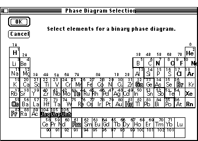

Distributed By: Virtual Labs
Phase Diagram Selection Dialog Box
PATH...File Menu:New::Phase Diagrams...

Phase Diagram Selection Dialog Box
The Phase diagram selection dialog box can only be accessed from the New
menu by selecting the Phase Diagram... hierarchical menu item. The resulting
dialog box is the Periodic Table .
Highlighted elements have stored binary phase diagrams. Selecting one element
by clicking on it will change the hilited elements in the Periodic
Table to those elements which have a stored binary phase diagram with
the original element. Clicking on the OK button will cause the selected
phase diagram to be displayed. Clicking on the Cancel button will result
in the dialog box being closed without a subsequent phase diagram being
generated.
Author: J.ames T.
Stanley
 Desktop
Manual:Dialog Boxes
Desktop
Manual:Dialog Boxes
Distributed By: Virtual Labs
Last Updated:1/12/96 Sat, Apr 27, 1996